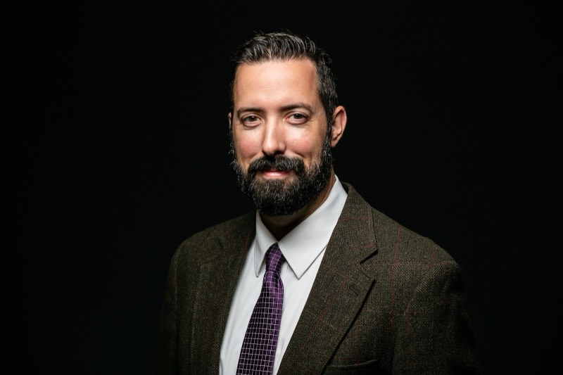
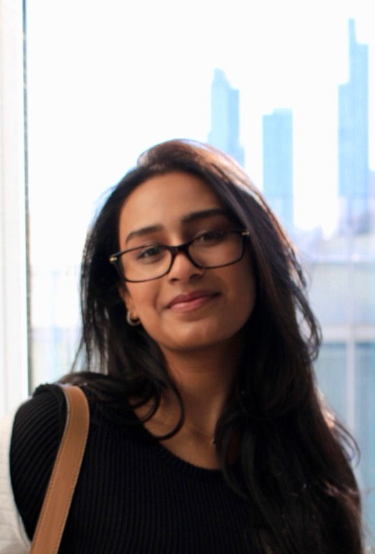
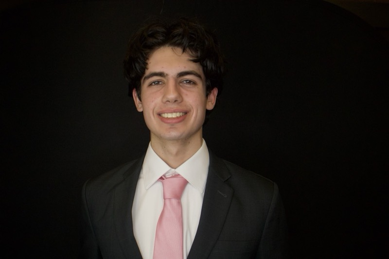

People
Burns Lab Members

Michael Burns, PhD
Principal Investigator

Shreya Bhagi
Bioinformatics MS student
2024-25 Mulcahy Fellow
Teo Tran
Bioinformatics BS/MS student
Jannah Eladl
Undergraduate researcher
WISER Fellow 2024, Mulcahy Fellow 2025
Dania Achmar
Undergraduate researcher
USRE Fellow 2024
Kendall Saunders
Undergraduate researcher
USRE Fellow 2026

Owen Cooper
Undergraduate researcher
Lab Alumni
Former Graduate Students
- Elise Stagaman, Bioinformatics MS
- Umar Siddiqui, Bioinformatics MS
- JJ Colgan, Bioinformatics MS
- Sidra Sohail, Bioinformatics MS
- Roza Gawin, Bioinformatics MS
- Bright Asante, Bioinformatics
- Gail Enriquez, Biology MS
- Annemiek Doedens, Biology
Former Lab Members
- Merjaan Ahmad
- Aqsa Ahmed
- Anna Ali
- Zaina Anarwala, REAP
- Mirza Baig
- Aarifah Bandealy
- Benish Baqai
- Hannah Bergom
- Julia Burns
- Stephanie Cardenas
- Hector Chapa
- Jessie Chen
- Sri Contractor
- Claire Creighton
- Kathya Delgado, CURA Scholar
- Anjali Devabhaktuni
- Abigail Erickson
- Ramsha Essa
- Cat Fujiwara
- Eliot Gild
- Aisha Jarad
- Tera Joseph
- Arsalan Kamran
- Maryam Khalid
- Natalia Klisch
- Sophia Koziol
- Emily Kring
- Dawid Maciorowski
- Gowtam Mannam
- Sumeed Yoyo Manzoor
- Gabrielle Martinez
- Mylee McCool
- Katherine Mediate, WISER
- Emily Micklin
- Moonis Nadeem
- Kush Patel
- Prachi Patel
- Trisha Patel
- Vraj Patel
- Cole Pliura
- Delaney Rager
- Saima Rahman
- Sophia Rahman
- Vane Ristov
- Rita Smith
- Thomas Stanila
- Emma Steveler
- Zoe Sun
- Sarah Syed
- Sara Temelkova
- Karthi Thiyagarajan
- Fedinandas Valinskis
First Year Research Experience Students
- Valerie Alvarez
- Savannah Baker
- Andi Beaudouin
- Ann Chaney
- Kacey Collins
- Ismael Curiel
- Isabella Gates
- Adam Hidad
- Mohit Jain
- Ester Lageson
- Elle Laurencelle
- Quinn Nkwenti
- Shivani Patel
- Bocote Potter
- Praneet Rao
- Xavier Rosas
- Delaney Sauer
- Natalie Shamon
- Anastasia Stanley
- Noelle Woods
- Melanie Zuniga
Interfaith America Vaccine Ambassadors
- Alexandra Brist
- Kass Cambron
- Claire Creighton
- Anjali Devabhaktuni
- Ramsha Essa
- Cat Fujiwara
- Sofia Khatoon
- Sumerah Khatoon
- Emily Kring
- Dawid Maciorowski
- Sohaib Mirza
- Faith Moreno
- Vraj Patel
- Akila Raoul
- Sydney Samoska
- Thomas Stanila
- Lama Zaioor
- Augusta Zukauskas
Collaborators
Research Groups
- Ran Blekhman, U Chicago
- Dan Knights, UMN
- Andres Gomez, UMN
- Subree Subramanian, UMN
- Reuben Harris, UT Health San Antonio
- David Largaespada, UMN
- Timothy K. Starr, UMN
- Beth Archie, Notre Dame
- Luis Barreiro, U Chicago
- Francesca Luca, Wayne State
- Alan Zhou, Feinberg School of Medicine
- Prakasha Kempaiah, Mayo Clinic
- Amy Paller, Feinberg School of Medicine
Artificial Intelligence and Digital Ethics
- Florence Chee, School of Communication and Center for Digital Ethics and Policy, LUC
- George K. Thiruvathukal, Computer Science, LUC
- Matthew Dunch, SJ, Philosophy, LUC
Character Education and Assessment
- Shannon Howes, Student Development, LUC
- Jim Flavin, Student Development, LUC
Science Education and Public Engagement
- Joseph Vukov, Philosophy, LUC
- Robert Morrison, LUC
- Peter Jones, LUC
- David Dault, LUC
- Jamie Jensen, Biology, Brigham Young University
- Susan Haarman, Interfaith America
Ecology and Environmental Systems
- Joseph Milanovich, Biology, LUC
- Yoel Stuart, Biology, LUC
- Leigh Anne Harden, Biological Sciences, Benedictine University